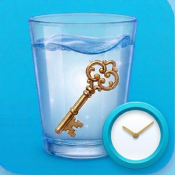

Water Wisdom
Buvez de l'eau à temps.
Vivez avec sagesse.
Water Wisdom vous rappelle de boire de l'eau, calcule votre objectif quotidien personnel et récompense chaque verre par une courte pensée de grands penseurs.
▶ Disponible sur Google PlayGratuit · Fonctionne hors ligne · Sans inscription
Tout pour boire assez d'eau
Votre objectif personnel
Calculé selon votre poids, votre sexe et le climat — ou fixez-le vous-même.
Rappels intelligents
Répartis sur la journée, ils respectent vos repas et ne vous réveillent jamais la nuit.
Pas et entraînements
Le podomètre facultatif et « Ma routine » ajoutent de l'eau les jours actifs.
Un verre qui se remplit
Une vague animée montre à quel point votre verre du jour est plein.
Une pensée sage à chaque verre
De courtes citations de Marc Aurèle, Sénèque, Confucius, Lao-tseu et d'autres.
Progrès et séries
Statistiques sur 7 et 30 jours, séries de jours, gel de série et mode pause pour les vacances.
Widgets d'écran d'accueil
Un compteur d'eau compact et un grand widget avec une citation.
Design apaisant
Fonds marins, couleurs douces et thème noir AMOLED.
Vos données restent chez vous
Sans compte, sans publicité, sans collecte de données. Tout ce que vous saisissez reste sur votre téléphone.